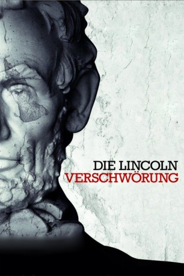

#1150 Die Lincoln Verschwörung
Alternativ: The Conspirator
 
 IMDB-Wertung: 6.9 / 10
IMDB-Wertung: 6.9 / 10  Metascore: 55
Metascore: 55 
Washington 1865. Der amerikanische Bürgerkrieg zwischen Nord- und Südstaaten ist vorbei, aber das Land kommt nicht zur Ruhe. Da wird Präsident Abraham Lincoln ermordet. Die verwitwete Südstaatlerin und Pensionsbetreiberin Mary Surratt wird zusammen mit sieben Männern der Kollaboration mit dem Attentäter angeklagt und vor ein Militärgericht gestellt. Ausgerechnet der junge Frederick Aiken, ein Kriegsheld der Nordstaaten und frischgebackener Anwalt, soll ihre Verteidigung übernehmen. Nur widerwillig erklärt er sich dazu bereit. Während das aufgebrachte Volk nach Rache schreit, wächst bei Frederick im Laufe des Prozesses mehr und mehr Bewunderung für die geheimnisvolle Frau.
Jahr: 2010
Dauer: 122 Minuten
FSK: 12
Land: USA Studio: Roadside AttractionsTonspuren: DTS - ,
Untertitel: Deutsch,
Auflösung: 1080p (1920x800) Größe: 9103 MB
Genre: Krimi, Drama, Geschichte
Regisseur:  Robert Redford
Robert Redford
Drehbuch: James D. Solomon, James D. Solomon, Gregory Bernstein
Soundtrack: Mark Isham
Darsteller:
 James McAvoy als Frederick Aiken
James McAvoy als Frederick Aiken Robin Wright als Mary Surratt
Robin Wright als Mary Surratt Kevin Kline als Edwin Stanton
Kevin Kline als Edwin Stanton Evan Rachel Wood als Anna Surratt
Evan Rachel Wood als Anna Surratt Tom Wilkinson als Reverdy Johnson
Tom Wilkinson als Reverdy Johnson Justin Long als Nicholas Baker
Justin Long als Nicholas Baker Danny Huston als Joseph Holt
Danny Huston als Joseph Holt James Badge Dale als William Hamilton
James Badge Dale als William Hamilton Colm Meaney als General Hunter
Colm Meaney als General Hunter Alexis Bledel als Sarah Weston
Alexis Bledel als Sarah Weston Johnny Simmons als John Surratt
Johnny Simmons als John Surratt Toby Kebbell als John Wilkes Booth
Toby Kebbell als John Wilkes Booth Jonathan Groff als Louis Weichmann
Jonathan Groff als Louis Weichmann Stephen Root als John Lloyd
Stephen Root als John Lloyd John Cullum als Justice Wylie
John Cullum als Justice Wylie Norman Reedus als Lewis Payne
Norman Reedus als Lewis Payne- John Michael Weatherly als George Atzerodt
 Marcus Hester als David Herold
Marcus Hester als David Herold Chris Bauer als Major Smith
Chris Bauer als Major Smith Jim True-Frost als General Hartranft
Jim True-Frost als General Hartranft Shea Whigham als Captain Cottingham
Shea Whigham als Captain Cottingham David Andrews als Father Walter
David Andrews als Father Walter- John Curran als General Howe
 Robert C. Treveiler als General Harris
Robert C. Treveiler als General Harris Brian F. Durkin als Lieutenant
Brian F. Durkin als Lieutenant Cullen Moss als Stanton's Officer
Cullen Moss als Stanton's Officer- Kathleen Hogan als Mrs. Mountchessington
- Dennis Clark als Andrew Johnson
 Lori Beth Sikes als Female Guest #1
Lori Beth Sikes als Female Guest #1- Amy Tipton als Female Guest #2
- Beau Turpin als Boardinghouse Guard
 Glenn R. Wilder als Secretary Seward
Glenn R. Wilder als Secretary Seward Brian Duffy als Frederick Seward
Brian Duffy als Frederick Seward- Kevin Nichols als Douglas
- Andy Arrasmith als Courtroom Guard (uncredited)
- Kevin Buttimer als Union Soldier (uncredited)
- Russell Cook als Priest (uncredited)
- Will Finch als Journalist (uncredited)
- Rachel Herrick als Stage Actress Augusta (uncredited)
- Baily Hopkins als VFX Townsperson (uncredited)
- David Michael-Smith als Execution Witness / Jailed Actor (uncredited)
- Kenny Prawat als Union Soldier (uncredited)
- Jessica Shay als Ford's Theatre Patron (uncredited)
- John L. Smith Jr. als Senator Aide to Vice President Johnson (uncredited)
- Ron Stafford als Benn Pitman (uncredited)
- Jeremy Tuttle als Samuel Arnold (uncredited)
- Gene Witham als Courtroom Gallery Person (uncredited)
- James Kirk Sparks als Edman Spangler
- Jason Hatfield als Asa Trenchard
- Gerald Bestrom als Abraham Lincoln
Datei: X:\2010(G-M)\Lincoln Verschwörung, Die (2010, FSK12, 1920x800).mkv seit 29.05.2015
Festplatte: HD 2010(G-Z)-2011(A-F)
 Es gibt insgesamt 85 Filme in der Gruppe '2010(G-M)'
Es gibt insgesamt 85 Filme in der Gruppe '2010(G-M)'